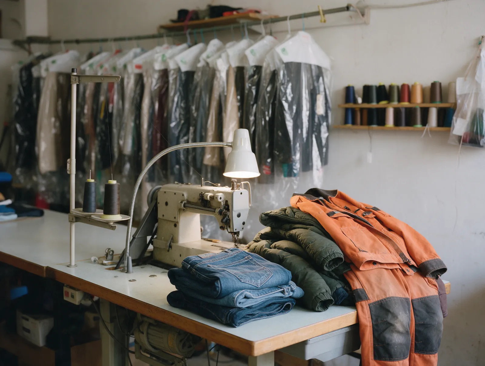
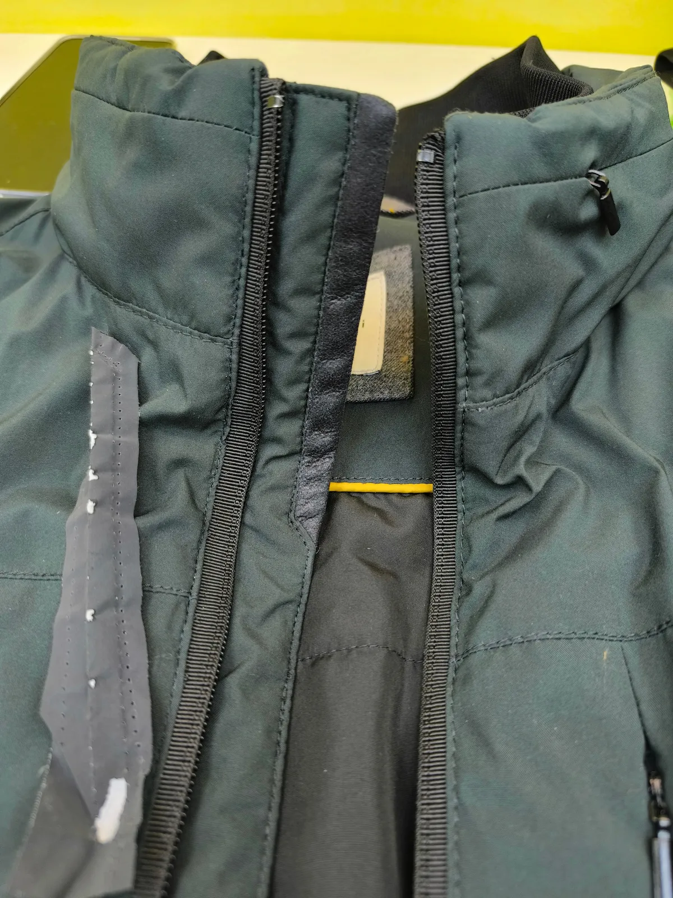
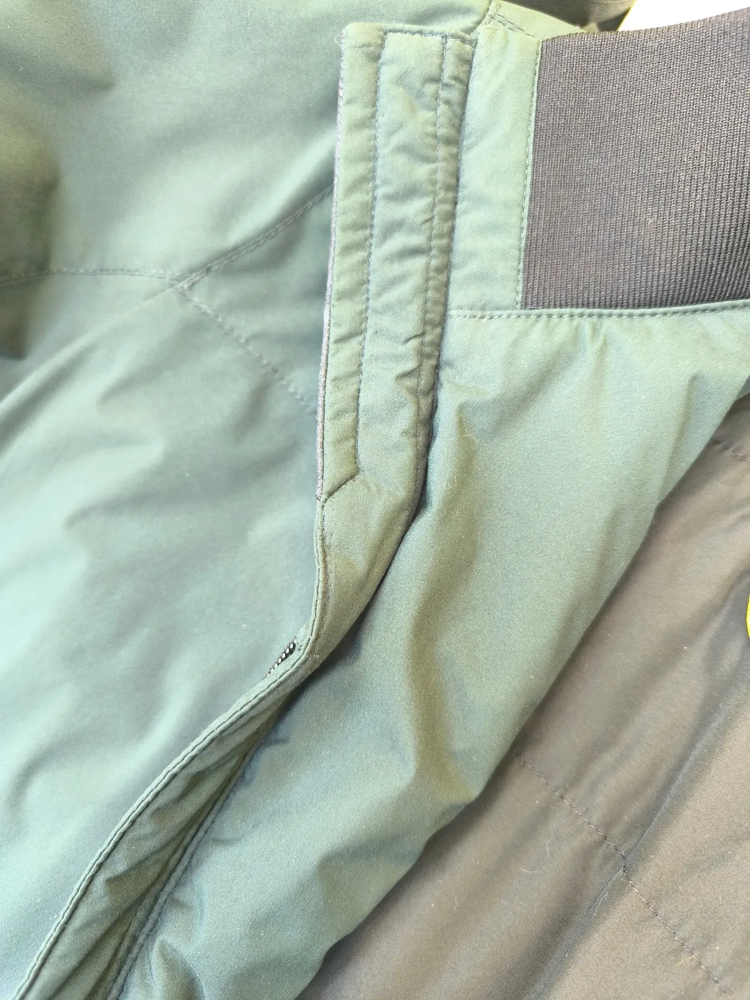
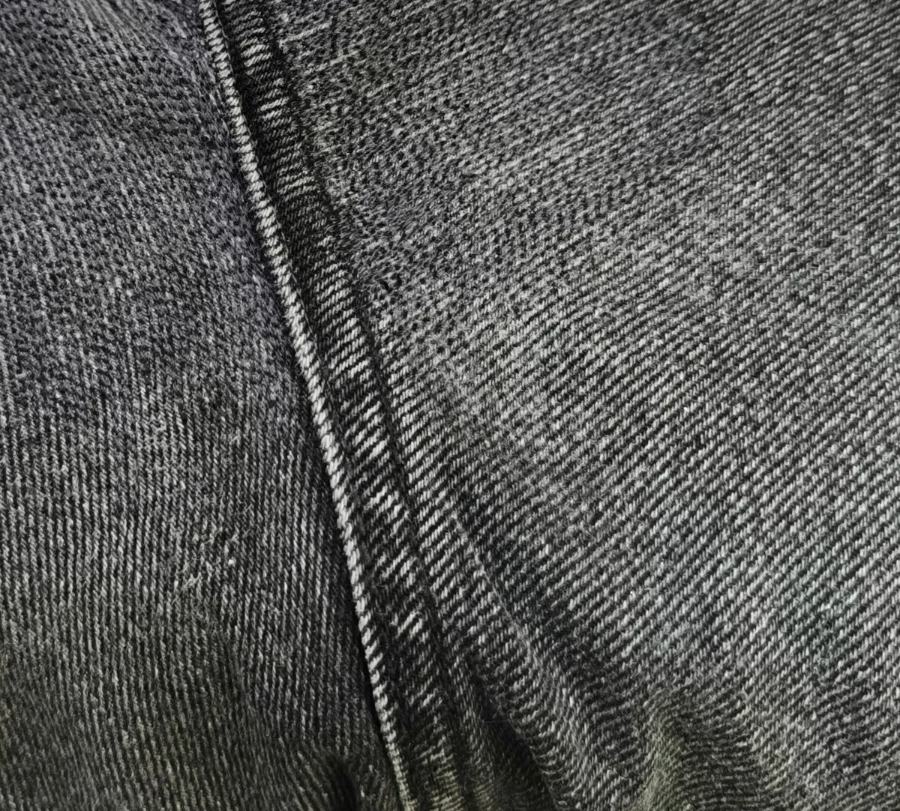

Ремонт одежды · кожа и мех · пошив
«Ловкий портной» в Братеево – чиним всё, от рабочей робы до вечернего платья
Подшить брюки, ушить платье, заштопать спецодежду, заменить молнию на пуховике. Москва, Борисовские Пруды, 26, 2 этаж.
- Рейтинг 4,7 на Яндекс Картах
- СМС, когда вещь готова
- Каждый день 10:00–22:00

Услуги
Цену называем до начала работы – по телефону или когда посмотрим вещь.
Ремонт и подгонка
- Подшить брюки или джинсыуточнить
- Ушить платье или брюкиуточнить
- Подшить манжеты, укоротить рукавауточнить
- Штопка, латкиуточнить
- Удлинить детские вещиуточнить
Верхняя одежда и спецодежда
- Замена молнии на куртке или пуховикеуточнить
- Ремонт пуховикауточнить
- Ремонт спецодеждыколени, порезы, латки, нашивкиуточнить
- Кожа и мехуточнить
Пошив и необычные заказы
- Пошив платья на заказуточнить
- Чехлы на мебельуточнить
- Одежда для собакуточнить
Как сдать вещь
- 01
Звоните
Говорите, что нужно сделать, – подскажем цену и срок.
- 02
Приносите вещь
Борисовские Пруды, 26, 2 этаж. Каждый день с 10:00 до 22:00.
- 03
Примерка на месте
Можно померить вещь – подскажем, как лучше посадить.
- 04
СМС о готовности
Пришлём сообщение, как только вещь будет готова.



За что нас хвалят в отзывах
Спецодежда – тоже к нам
Из отзыва: «Штопают мою робу регулярно, я же строитель».
Берёмся, когда другие отказали
Из отзыва: «многие отказались, но вот они первые кто не отказался».
Сообщаем о готовности
Из отзыва: «Через час прошло сообщение, что всё готово и можно забирать».
Ходят годами
Из отзыва: «Даже после переезда на другой район, все равно вожу вещи только сюда».
Отзывы с Яндекс.Карт
«Постоянно тут шью, то есть отдаю на заштопать. Штопают мою робу регулярно, я же строитель. Последний раз штопали колени, латки, подобрали быстро материл надежный, что не могу сказать о других ателье 😉»
Александр Войтов · 17 сентября
«Хочу выразить благодарность коллективу и особенно отметить мастера Фатиму. Отдала на ушив платье. Сроки были маленькие, нужно было довольно таки быстро ушить платье и мастер с этим справился. Я не первый раз обращаюсь в это ателье, всегда все хорошо. Все работают быстро и качественно!»
Анжелика Ч. · 22 мая 2025
«Очень хорошее ателье. Не первый раз отдаю подшить брюки и джинсы. Делают быстро, один раз через 4ч уже прислали смс - уведомление о готовности заказа. Все всегда отлично, качественно. Вежливый персонал. Спасибо. Рекомендую!»
Римма · 2 июля 2024
Отзывы с карточки на Яндекс.Картах, без правок.
Частые вопросы
Можно узнать цену, не приезжая?
Да, позвоните: +7 (915) 252-24-99 – подскажем цену и срок.
Когда вы работаете?
Каждый день, с 10:00 до 22:00 – можно зайти после работы.
Как я узнаю, что вещь готова?
Пришлём СМС на ваш номер.
Возьмётесь за необычный заказ?
Позвоните и расскажите – шили чехлы на мебель, подушки, одежду для собак, ремонтировали гимнастические купальники.
Позвоните – скажем цену и срок
- Адрес
- ул. Борисовские Пруды, 26, 2 этаж, Москва
- Часы
- ежедневно 10:00–22:00
- Телефон
- +7 (915) 252-24-99